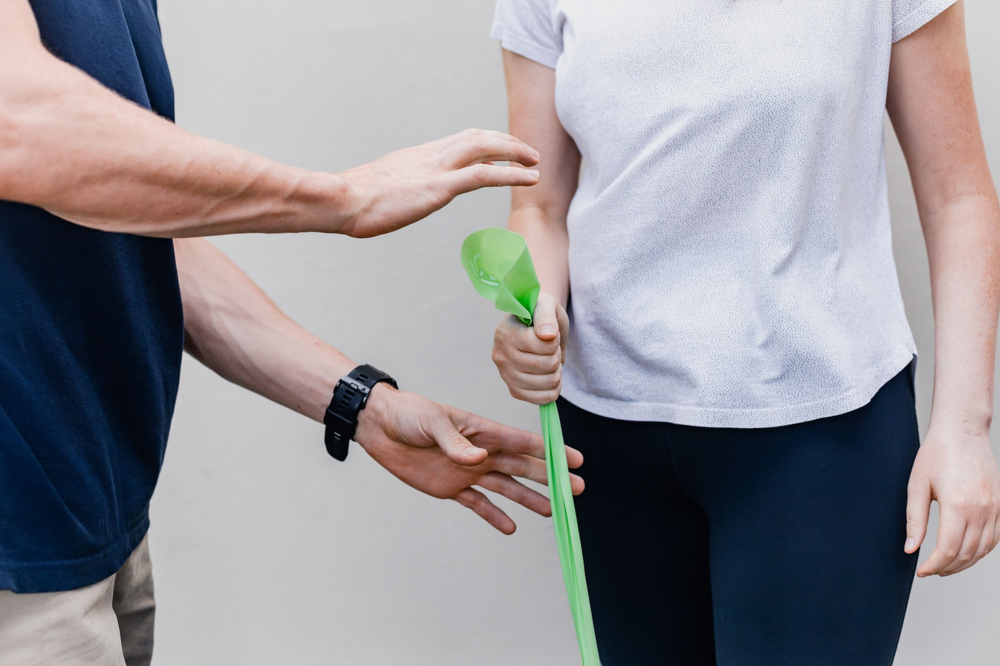
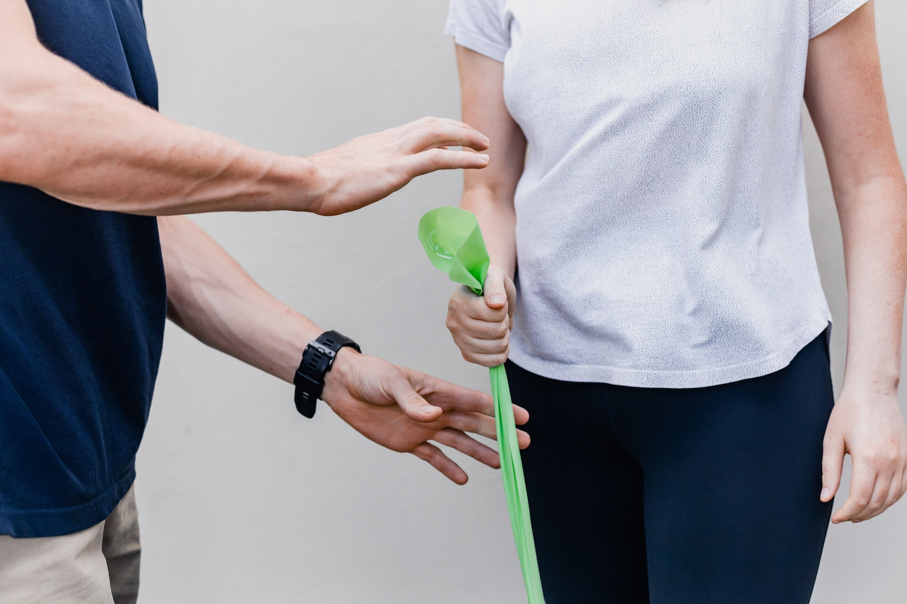

we are all about people. Our team of experienced therapists has been making a difference for over two decades. We're not just a company; we're a dedicated group of professionals who truly care.
Our mission is to provide top-notch Physical Therapy, Occupational Therapy, and Speech Therapy interventions that cater to a wide range of clients. Whether it's at our Outpatient Clinic, through our Contract Therapy Management Services, or right in the comfort of your own home with our Outpatient Therapy services, we're here to make a positive impact on your well-being.
Speaking of home, that's where our hearts are too. We focus on more than just therapy; we're all about creating a safe environment, improving strength and balance, and preventing falls. By working closely with caregivers, we're not just building physical wellness – we're enhancing overall quality of life. And in doing so, we're not just helping you stay healthier, we're also playing a role in reducing the strain on resources like Medicare and insurance providers.
JSI isn't just a service provider – we're your partners in better health and a brighter future.